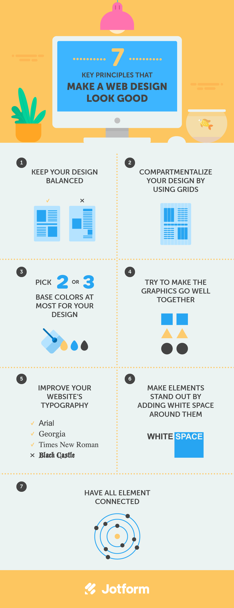
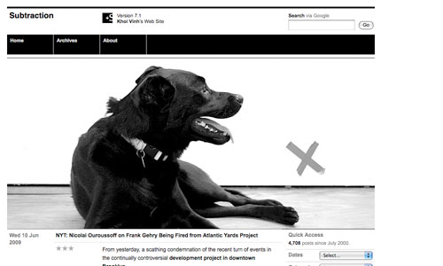
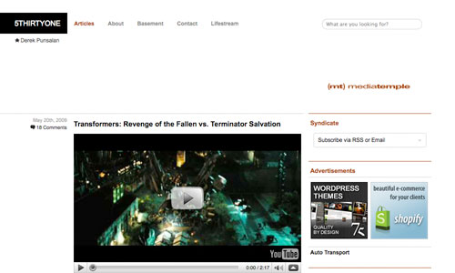
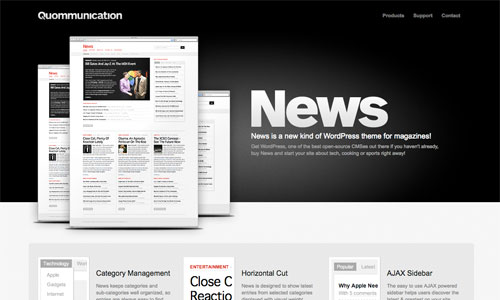
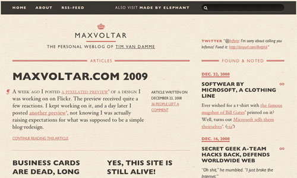
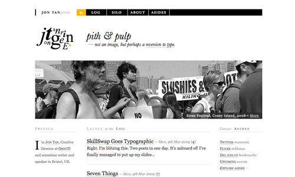
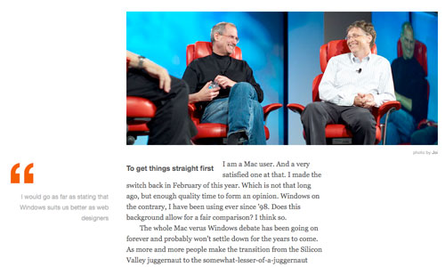
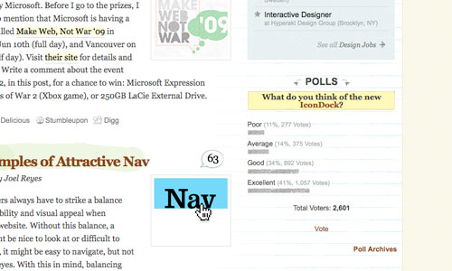

How to Design a Website: 7 Key Principles for visually appealing websites
(Last Update On: March, 15 2023)
Everyone and their grandfather (and dog) seems to have made a website these days. The Web is getting more crowded by the day, with literally dozens of websites being added as you read this article. It is becoming harder and harder to get noticed among the masses.
But designing your own website is hard.
Did You Know
You can’t have amazing web design without spiffy forms.
“Fortunately” for us designers, not everyone seems to understand what makes or breaks a Web design. Granted, Web design is to a large extent a creative process and can therefore be called more art than science. But because it is intrinsically a medium of presentation, some rules (or at least principles) apply. By following some simple pointers, anyone should be able to create a visually pleasing design and take one step closer to fame. Okay, it’s not that simple, and talent and experience do matter, but anyone can turn their home page into something prettier within mere minutes.

So what makes something pretty? It is not Flash. Not to say that Flash has no merit, but Flash alone doesn’t make a design good; some nasty Flash websites are out there. Also, one doesn’t have to be a great illustrator to make appealing designs. Instead, look at Web design as a symbiosis of different elements. No single element counts the most; rather, the sum of the elements makes a design look good.
1. Keep your design balanced.
Balance is all about ensuring that your design does not tip to one side or the other. It is like the balance of weight in achieving symmetry or asymmetry.
Look at the dog in the header graphic of Khoi Vinh’s Subtraction website below. I took this example from The Principles of Beautiful Web Design by Jason Beaird. Jason points out how the cross to the right makes up for the added visual weight that the dog provides on the left. It is a small but not insignificant detail. See for yourself by hiding the cross with your hand.
This is what we call asymmetrical balance, and this is what balance is about. If you’re not careful about how you lay things out, the design will become unbalanced rather quickly. You can manipulate the visual weight of a design in many ways, such as with color, size and the addition or removal of elements. If you were to make the cross, say, a vibrant orange, it would become heavier and perhaps throw the layout off balance again. Achieving asymmetrical balance is an especially delicate matter that takes time to fine-tune and a somewhat trained eye to really pull off.

2. Compartmentalize your design by using grids.
The concept of grids is closely related to that of balance. Grids are a series of horizontal and vertical rulers that help you “compartmentalize” a design. Think of columns. Columns improve readability, making a page’s content easier to absorb. Spacing and the use of the Rule of Thirds (or similar Golden Ratio) make everything easier on the eye.
The Rule of Thirds and Golden Ratio account for why sidebars, for example, are usually about a third of the width of the page and why the main content area is roughly equal to the design’s width divided by 1.62 (equalling phi in mathematics). We won’t get into why this is, but it does seem to hold true in practice. It is also why the subject in professionally taken photographs is usually positioned not in the middle but at the intersection of an imaginary nine-square grid (three by three, with two horizontal and two vertical lines).

3. Pick two or three base colors at most for your design.
What if you changed the base red on the The First Twenty website (above) to lime green? Would it look good? Most likely not. Because it does not belong to the same color palette (and of course lime green isn’t the easiest color to work with). Websites such as ColourLovers exist for a reason. You can’t just pick your colors Rambo-style, guns blazing. Some colors go well together, others don’t. A lot of theories on colors and their combinations exist, including conventions on monochrome and contrasting schemes, but a lot comes down to common sense and having a feel for it.
Find out for yourself what works together. Soak up as many website designs as possible, such as those featured on any of the many CSS showcase websites (like Best Web Gallery), to get a feel for how colors interact with each other. Pick two or three base colors at most for your design, and then use tints (which are lighter, mixed with white) and shades (which are darker, mixed with black) of these base colors to expand the palette where necessary.
Picking nice colors is as important as picking the right colors (that is, the right colors for the job). A Web design for a cozy little restaurant would do well with “earthy” tones: reds, browns, etc. Of course, there is no such thing as a surefire recipe. Every color sends out a message, and it is up to you to get the message right.
Bence Kucsan’ website has a color scheme style of his own. It’s mainly monochromatic (tints and shades of a single color) and achromatic (black and white) with a color (red) to stand out:
The black and white conveys chic and professional, while the red adds the spice that makes certain elements stand out and keeps the design from looking dull; of course, more than just red makes this design interesting. By the way, one company in particular popularized this style.
4. Try to make the graphics go well together.
Okay, great design doesn’t need fancy graphics. But poor graphics will definitely hurt a design. Graphics add to the visual message. Websites like WebDesigner Wall have impressive illustrations, while others are understated.

5. Improve your website’s typography.
The art of type is a tricky subject to talk about because it encompasses so many elements. While it can be regarded as a branch of design, one can spend a lifetime mastering all of its aspects. This is not the place to provide a complete typographic reference, so we will limit our discussion to what will benefit you in the short term.
Web typography is handicapped compared to print typography. The biggest difference is our lack of complete control over the appearance of type on the Web, due to its dynamic character. Obviously, dynamic rendering has its strengths, but Web designers have little control over the results, at least for now. Missing fonts on the user’s computer, differences in browser and platform rendering, and generally subpar support in CSS make Web typography a daunting if not frustrating task. But while we may have to wait for CSS 3 for Web typography to reach its full potential, we have the means now to make it look interesting and, more importantly, pretty.

6. Make elements stand out by adding white space around them.
White space, or negative space, has to do with what is not there. Like measure and leading, white space gives text some breathing room and spatial peace. You can make elements stand out by adding white space around them. Copy, for example, shouldn’t look cramped. To ensure readability, make sure paragraphs have sufficient padding.
Perfume ads — or any ad for a luxury product for that matter — are known for their use of white space… loads of it; and a serif typeface for good measure.

7. Have all elements connected.
“Connection” is a bit of a made-up term here, but it seems to be the best one for what we mean. Connection here refers to a Web design that has both unity and consistency. These two attributes demonstrate the profesionalism of a design (and thus its designer). They are very broad attributes. A design should be consistent in its use of colors, in its range of fonts, with its icons, etc. All of these aspects count; a design can look great and still suffer from inconsistencies.
When a design is inconsistent, its unity can be lost on the user. Unity is slightly different from consistency. Unity refers to how the different elements in a design interact and fit together. For example, do the colors and graphics match? Does everything contribute to one unified message? Consistency, on the other hand, is found between the pages of a design.
Unity is perhaps the more important of the two. Without unity, having a good design is hard. Inconsistency, however, may look a bit “sloppy” but may not make the design “bad.”
Of the seven principles addressed in this article, connection is the most important. Connection has to do with how all elements come together: balance, grid, colors, graphics, type and white space. It is sort of the glue that binds everything together. Without this glue, the design falls apart. You could have pretty type and a brilliant and meticulously chosen color palette, but if the graphics are awful or simply don’t match or if everything is crammed together without thought, the design will fail.
This is the hardest part of designing. It is not something that can be easily taught or necessarily be taught at all. A little natural ability and experience is required. But it is what it is, and it makes a design look good in the end.
Post Categories
Other Blogs :

Beautiful Websites
On this page, we’ll provide you with six tips for creating beautiful websites. Keep reading to learn more about how to create a visually appealing and functional website for your audience. You can't have amazing web design without spiffy forms.
Read More
Make a Beautiful Website
It might not seem like such a big deal, but the way your website looks matters a lot. In a recent study by Forrester Research, they found that a well designed interface can increase conversion rates on your website by 200%. Where do you start?
Read More
Leave a Comment